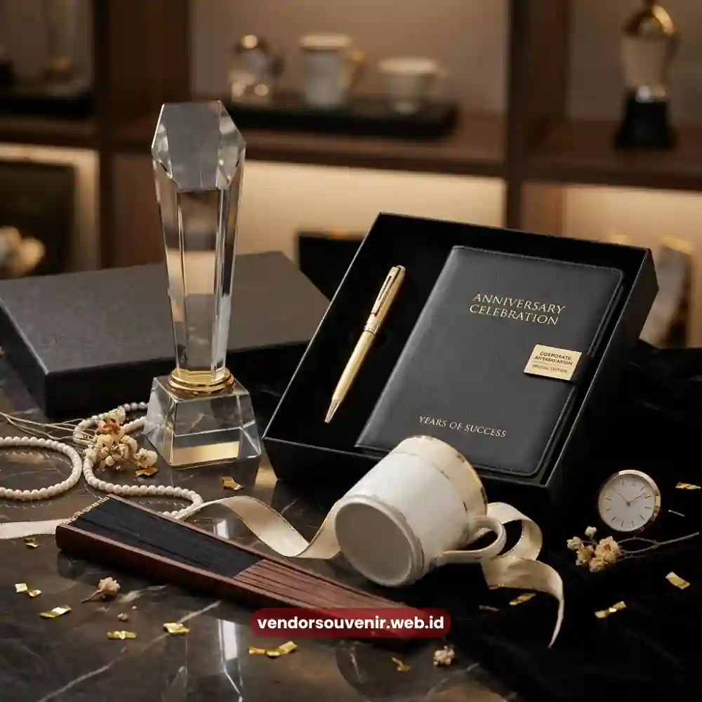

Daftar Isi
Souvenir custom logo perusahaan adalah produk hadiah yang didesain khusus dengan menyertakan identitas visual brand.
Seperti logo, warna korporat, dan tagline perusahaan, untuk memperkuat pengenalan brand pada momen hari jadi perusahaan.
Personalisasi ini tidak hanya membuat souvenir terlihat lebih profesional, tetapi juga meningkatkan efektivitas produk sebagai media branding jangka panjang.
- Custom logo memperkuat brand recall pada setiap produk yang digunakan penerima.
- Konsistensi warna dan tipografi brand penting dijaga dalam proses desain.
- Pemilihan teknik cetak memengaruhi daya tahan dan kualitas hasil akhir logo.
- Tidak semua produk cocok untuk seluruh teknik personalisasi logo.
- Vendor Souvenir menyediakan konsultasi desain untuk hasil custom logo yang optimal.
Mengapa Custom Logo Penting pada Souvenir Hari Jadi Perusahaan?
Custom logo memiliki peran penting dalam souvenir hari jadi perusahaan karena menjadi elemen utama. Elemen ini membedakan produk generik dengan produk yang benar-benar merepresentasikan identitas brand.
Kehadiran logo pada produk souvenir secara konsisten menciptakan pengalaman visual. Pengalaman ini mengingatkan penerima pada perusahaan setiap kali produk tersebut digunakan.
Dari sisi strategi pemasaran, souvenir dengan custom logo berfungsi sebagai media promosi pasif. Efektivitas promosi pasif ini dapat berlangsung dalam jangka panjang.
Berbeda dengan iklan konvensional yang memiliki masa tayang terbatas. Souvenir fisik dapat terus digunakan penerima dalam hitungan bulan hingga tahun, sehingga paparan brand menjadi lebih berkelanjutan.
Selain aspek promosi, custom logo pada souvenir anniversary juga menjadi simbol kebanggaan tersendiri. Baik bagi karyawan maupun klien yang menerimanya.
Produk dengan identitas brand yang jelas cenderung dianggap lebih eksklusif. Jauh lebih eksklusif dibandingkan produk polos tanpa personalisasi apa pun.
Elemen Desain Apa Saja yang Perlu Diperhatikan dalam Souvenir Custom Logo?
Elemen desain yang perlu diperhatikan dalam souvenir custom logo meliputi konsistensi warna brand. Selain itu proporsi ukuran logo terhadap produk, pemilihan tipografi, serta kesesuaian gaya visual dengan citra perusahaan secara keseluruhan.
Setiap elemen ini saling memengaruhi hasil akhir tampilan produk. Konsistensi warna brand menjadi elemen paling mendasar.
Karena warna merupakan salah satu aspek yang paling cepat dikenali secara visual. Perbedaan warna yang mencolok antara identitas brand asli dengan hasil cetak pada produk.
Hal tersebut dapat menurunkan kesan profesional souvenir yang dihasilkan. Proporsi ukuran logo juga perlu diperhatikan agar tidak terkesan berlebihan pada produk premium.
Logo yang terlalu besar cenderung mengurangi kesan elegan. Sementara logo yang terlalu kecil berisiko kurang terlihat jelas, sehingga diperlukan keseimbangan proporsional.

Merchandise Branding Korporat Anniversary
Bagaimana Memilih Teknik Cetak yang Tepat untuk Custom Logo?
Pemilihan teknik cetak yang tepat untuk custom logo bergantung pada jenis material produk. Dan juga tingkat detail logo yang ingin ditampilkan.
Beberapa teknik umum yang digunakan dalam industri souvenir korporat antara lain sablon, bordir, ukir laser. Serta ada juga cetak digital dengan resolusi tinggi.
Teknik ukir laser umumnya dipilih untuk produk berbahan logam atau kayu. Karena menghasilkan tampilan logo yang lebih tahan lama dan berkesan premium.
Sementara itu, teknik bordir lebih cocok digunakan pada produk berbahan kain seperti jaket atau tas. Karena memberikan tekstur timbul yang meningkatkan kesan eksklusif produk.
Produk Apa Saja yang Paling Cocok untuk Custom Logo Perusahaan?
Produk yang paling cocok untuk custom logo perusahaan umumnya adalah produk dengan permukaan datar. Dan area cukup luas untuk penempatan logo secara proporsional.
Seperti tumbler, plakat, gantungan kunci logam, buku agenda, hingga produk kulit seperti dompet dan tas kerja. Setiap kategori produk memiliki karakteristik penempatan logo yang berbeda.
Produk berbahan logam atau kaca umumnya menggunakan teknik ukir atau cetak UV yang menghasilkan detail tajam. Sementara produk berbahan kulit lebih sering menggunakan teknik emboss atau hot stamping untuk menciptakan kesan mewah dan tahan lama.
Bagaimana Menjaga Kualitas Hasil Custom Logo agar Tetap Tahan Lama?
Kualitas hasil custom logo dapat dijaga agar tetap tahan lama dengan memilih teknik cetak yang sesuai karakteristik material produk. Serta memastikan proses produksi dilakukan oleh tim berpengalaman dengan standar quality control yang jelas.
Kesalahan pemilihan teknik cetak dapat menyebabkan masalah. Misalnya logo cepat pudar atau terkelupas dalam waktu singkat.
Selain aspek teknik produksi, perawatan produk pasca penggunaan turut memengaruhi daya tahan hasil custom logo. Oleh karena itu, penyertaan panduan perawatan sederhana pada produk premium dapat membantu penerima menjaga kualitas souvenir dalam jangka waktu lebih panjang.
Wujudkan Souvenir Custom Logo Perusahaan Bersama Vendor Souvenir
Vendor Souvenir menyediakan layanan custom logo menyeluruh untuk berbagai kategori produk korporat. Mulai dari konsultasi desain, pemilihan teknik cetak yang sesuai material, hingga proses produksi dengan standar kualitas terjaga.
Setiap detail dikerjakan untuk memastikan identitas brand perusahaan Anda tampil maksimal pada setiap produk. Jadikan momen hari jadi perusahaan Anda semakin berkesan dengan souvenir custom logo berkualitas dari Vendor Souvenir.
Hubungi tim kami sekarang untuk konsultasi desain. Dan dapatkan penawaran terbaik sesuai kebutuhan brand Anda.
Souvenir custom logo perusahaan menjadi media branding jangka panjang. Yang efektif memperkuat pengenalan identitas brand pada momen hari jadi perusahaan.
Konsistensi desain, pemilihan teknik cetak yang tepat, dan kualitas produksi terjaga. Menjadi faktor kunci keberhasilan personalisasi ini.

Solusi Gift Set dari Vendor Terpercaya
Ingin Memesan Souvenir Custom Logo untuk Perusahaan?
Kami siap membantu mewujudkan produk souvenir korporat dengan hasil yang berkelas.
Konsultasikan desain logo dan pilihan teknik cetak Anda kepada tim ahli kami.
Mari jadikan momen anniversary perusahaan Anda semakin berkesan.
Dapatkan penawaran harga terbaik untuk pesanan korporat!
FAQ
Mengapa souvenir perlu diberi custom logo perusahaan?
Custom logo memperkuat brand recall dan menciptakan kesan eksklusif pada produk yang diberikan kepada karyawan maupun klien.
Teknik cetak apa yang paling awet untuk logo pada souvenir logam?
Teknik ukir laser umumnya paling awet untuk produk berbahan logam karena menghasilkan tampilan logo yang tahan lama dan tidak mudah pudar.
Produk apa yang paling direkomendasikan untuk custom logo korporat?
Produk dengan permukaan datar dan area cukup luas seperti tumbler, plakat, buku agenda, dan produk berbahan kulit umumnya paling cocok untuk custom logo perusahaan.
Maroon Souvenir
Partner Corporate Gift terpercaya di Indonesia. Berpengalaman melayani ratusan perusahaan sejak 2018.
Lihat Portofolio Kami